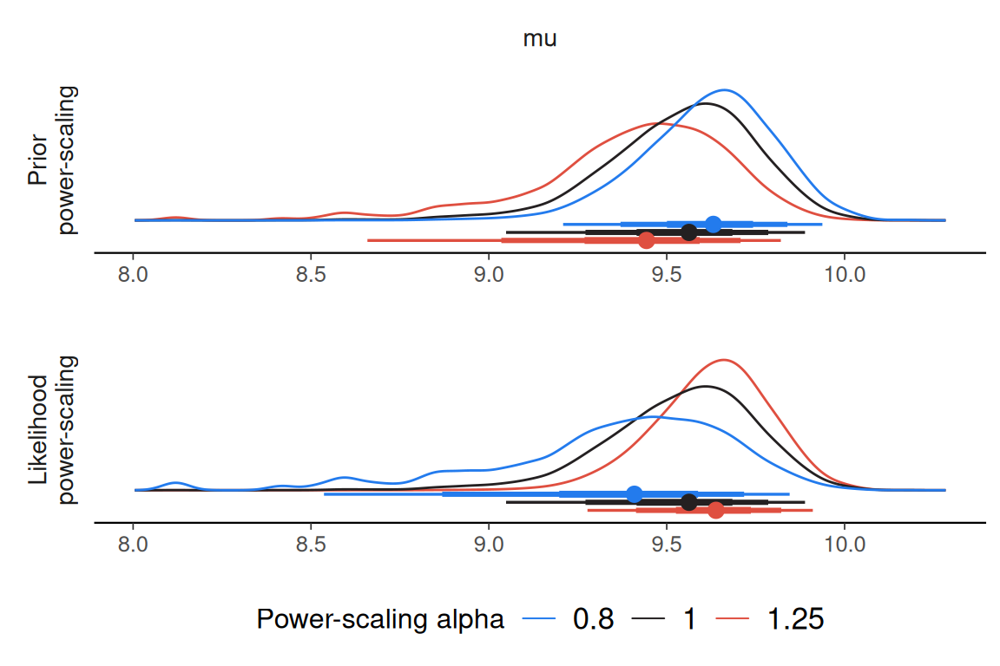
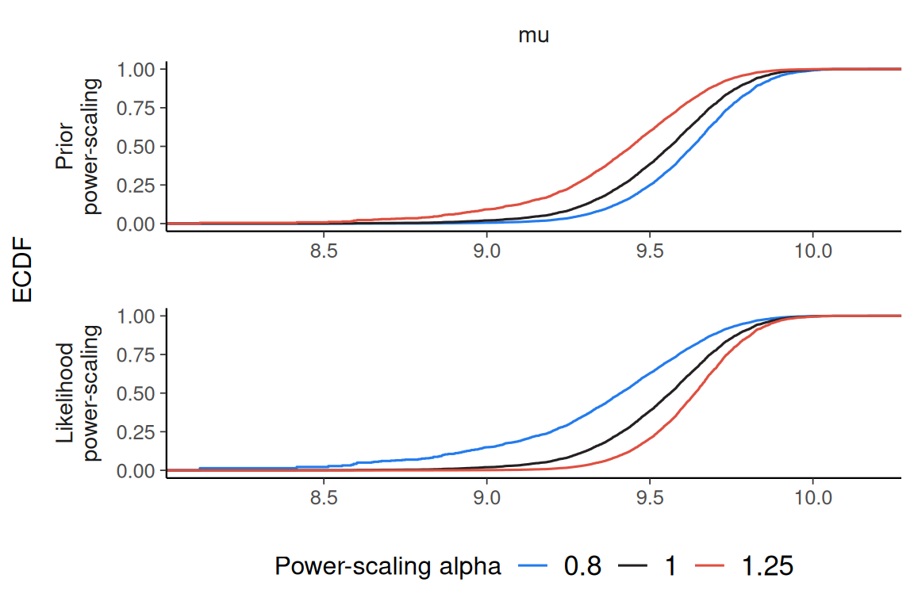
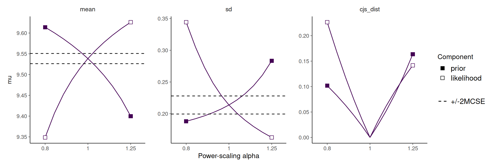

normal_model <- example_powerscale_model("univariate_normal")
fit <- normal_model$drawsIntroduction
priorsense is a package for prior and likelihood sensitivity diagnostics in Bayesian models. It currently implements power-scaling sensitivity analysis but may be extended in the future to include other diagnostics.
Power-scaling sensitivity analysis
Power-scaling sensitivity analysis tries to determine how small changes to the prior or likelihood affect the posterior. This is done by power-scaling the prior or likelihood by raising it to some \(\alpha > 0\).
- For prior power-scaling: \(p(\theta \mid y) \propto p(\theta)^\alpha p(y \mid \theta)\)
- For likelihood power-scaling: \(p(\theta \mid y) \propto p(\theta) p(y \mid \theta)^\alpha\)
In priorsense, this is done in a computationally efficient manner using Pareto-smoothed importance sampling (and optionally importance weighted moment matching) to estimate properties of these perturbed posteriors. Sensitivity can then be quantified by considering how much the perturbed posteriors differ from the base posterior.
priorsense works with models created with brms, rstan, cmdstanr, brms, R2jags, jagsUI, nimble, or with draws objects from the posterior package.
Requirements
priorsense needs two things that are usually not stored in a model fit by default: (unnormalized) log-prior and log-likelihood evaluations of the posterior draws. In many modelling languages, the model code can be adjusted so that these are saved as the model is fit. Otherwise, these can be created from the posterior draws manually. The default names of these variables are lprior and log_lik.
For instructions how to adapt model code, see the vignettes for each supported language:
-
brms:vignette("priorsense_with_brms") - Stan (
cmdstanrorrstan):vignette("priorsense_with_stan") - JAGS (
jagsUIorR2jags):vignette("priorsense_with_jags") - NIMBLE:
vignette("priorsense_with_nimble")
Simple example
Consider a simple univariate normal model with unknown mu and sigma fit to some data y (available viaexample_powerscale_model("univariate_normal")):
\[y \sim \text{normal}(\mu, \sigma)\]
with priors:
\[\mu \sim \text{normal}(0, 1)\]
\[\sigma \sim \text{normal}^+(0, 2.5)\]
Once you have posterior draws, sensitivity can be checked as follows.
We first check the sensitivity of the prior and likelihood to power-scaling. The sensitivity values shown below are an indication of how much the posterior changes with respect to power-scaling. Larger values indicate more sensitivity. By default these values are derived from the gradient of the Cumulative Jensen-Shannon distance between the base posterior and posteriors resulting from power-scaling. Without specifying a prior_selection, the joint prior will be power-scaled.
Sensitivity based on cjs_dist
Prior selection: all priors
Likelihood selection: all data
variable prior likelihood diagnosis
mu 0.390 0.558 potential prior-likelihood conflict
sigma 0.288 0.527 potential prior-likelihood conflictTo visually inspect changes to the posterior, use one of the diagnostic plot functions. Estimates with high Pareto-k values may be inaccurate and are indicated.
There are three plots currently available:
- Kernel density estimates:
powerscale_plot_dens(fit, variable = "mu")
- Empirical cumulative distribution functions:
powerscale_plot_ecdf(fit, variable = "mu")
- Quantities:
powerscale_plot_quantities(fit, variable = "mu")
As can be seen in the plots, power-scaling the prior and likelihood have opposite direction effects on the posterior. This is further evidence of prior-likelihood conflict.
Indeed, if we inspect the raw data, we see that the prior on \(\mu\), \(\text{normal}(0, 1)\) does not match well with the mean of the data, whereas the prior on \(\sigma\), \(\text{normal}^+(0, 2.5)\) is reasonable: